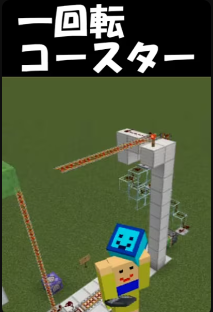

マイクラ一回転コースター

今回は、なんと一回転するジェットコースターを作ってみました。
仕組みはというと、はしごなどの見た目をレールに変えて、壁にかけていて、それで登れるようにコマンドを設定しています。
また、どうして常に動き続けるかというと、上がる直前でトロッコが通ったことを検知して、
微調整を重ねて上のスライムブロック付きの吸着ピストンが反応するようにしています。

ゆるっと気ままに、マイクラのことを書いてます。youtubeの配布物も載せます。

今回は、なんと一回転するジェットコースターを作ってみました。
仕組みはというと、はしごなどの見た目をレールに変えて、壁にかけていて、それで登れるようにコマンドを設定しています。
また、どうして常に動き続けるかというと、上がる直前でトロッコが通ったことを検知して、
微調整を重ねて上のスライムブロック付きの吸着ピストンが反応するようにしています。
コメントにはGoogleログインが必要です。
読み込み中…